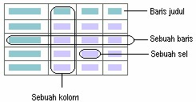
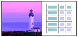

Tabel adalah sarana penampung data yang efektif. Dengan tabel, kita bisa
menampung banyak data sekaligus, bahkan menyusunnya secara sistematis dengan
organisasi tertentu. Data dikelompokkan ke dalam dua kategori utama yaitu baris
dan kolom. Baris adalah susunan mendatar dan kolom adalah susunan menurun,
keduanya akan membentuk segi empat dengan unsur persilangan dinamakan sel.

Gambar 9.1 Susunan sebuah tabel
Di dalam satu sel tersimpan sebuah data. Data bisa berupa sebuah teks, sebuah
gambar atau data lainnya termasuk sebuah tabel. Jadi sebuah tabel bisa menjadi data
dari tabel lain yang lebih besar. Tabel demikian dinamakan tabel bersarang (nested
table). Lihat Gambar 9.2 yang menunjukkan sebuah tabel sederhana, terdiri dari
sebuah baris dan dua kolom sehingga terbentuk dua sel. Sel pertama mengandung
data gambar dan sel kedua mengandung data tabel.

Gambar 9.2 Tabel bersarang
Tabel sering dibutuhkan pada dokumen ilmiah, karena fungsinya sebagai penyimpan
data. Untuk membuat tabel dengan FrontPage XP ada tiga macam cara, yaitu dengan
perintah Insert Tabel (untuk tabel sederhana), tombol Insert Table dan Draw Table
(untuk tabel kompleks).
Cara kerja tabel HTML sama dengan tabel pada program pengolah kata atau sebuah
program desktop publishing, ya itu sarana. penampung data.
Pada halaman web, tabel tidak hanya sarana penampung data, namun juga sebagai
pengatur tata letak. Kalau Anda sempat melongok situs di World Wide Web. Anda
mungkin berpikir "Bagaimana mereka dapat membuatnya seperti itu"? Jawabanya
seringkali menggunakan tabel.
Tanpa tabel, HTML akan membatasi cara menampilkan sesuatu. Tidak ada kolom
dengan teks banyak, tidak ada jenis kolom spread-sheet, tidak ada campuran teks dan
gambar pada halaman dengan konfigurasi tertentu.
Bekerja dengan tabel sangatlah mudah, terutama pada FrontPage XP. Tabel bisa
membuat halaman-halaman Anda tampil lebih menarik.
Copyright © Herlan Lesmana
Created with the Freeware Edition of HelpNDoc: Easily create Help documents